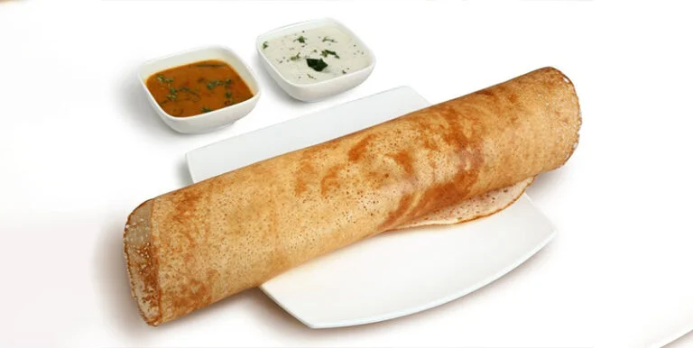

Dosa
Recipe

Description: Dosa is a crispy, thin South Indian pancake made from fermented rice and lentil batter. It's typically served with sambar (a lentil soup) and coconut chutney, making it a light yet satisfying meal.
Ingredients:
- Dosa batter (made from soaked and fermented rice and urad dal)
- Oil or ghee (for cooking)
- Salt (to taste)
- Water (to adjust batter consistency)
Instructions:
- Soak rice and urad dal separately for 4-6 hours. Grind them into a smooth batter and mix well. Allow the batter to ferment overnight.
Add salt and a bit of water to adjust the batter to a pouring consistency.
- Heat a flat pan or tawa over medium heat. Lightly grease it with oil or ghee.
Pour a ladle of batter onto the center and spread it out in a circular motion to form a thin layer.
- Drizzle a little oil around the edges and cook until the dosa turns golden and crispy. No need to flip.
- Serve Hot: Fold and serve the dosa with sambar, coconut chutney, or potato filling